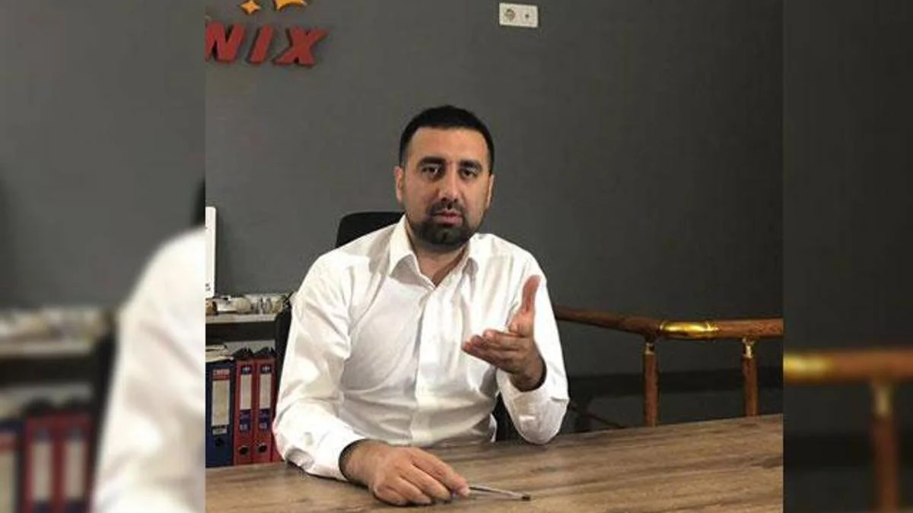

“Yangın söndürme sistemlerine gaz yerine su ve hava basabilirler, dikkat”
Otomatik yangın söndürme sistemlerinde orijinal ekipman ve sertifikalı gaz kullanımının önemi; davlumbaz ve pano içi sistemlerde hayati risklere karşı uzman keşif ilkeleri.
Fenix Yangın hakkında basında yayımlanan haberler, röportajlar ve video içeriklerinden seçilmiş medya arşivi.
Yangın güvenliği sektöründe standart dışı ekipman ve sahte gaz dolumu risklerine dair ulusal basında yer alan kapsamlı uzman değerlendirmesi.

Fenix Yangın Sistemleri Müdürü Gürkan Danacı'nın Demirören Haber Ajansı'na (DHA) yaptığı açıklamalarda; otomatik yangın söndürme tesisatlarında sahte ve kalitesiz parçaların oluşturduğu tehlikeler, merdiven altı gaz dolum riskleri ile elektrik panoları ve davlumbaz hatlarında can güvenliğini teminat altına alan orijinal mühendislik gerekliliği vurgulandı.
Sektör yayınlarında ve ulusal haber ajanslarında yayımlanan Fenix Yangın haberleri, teknik analizler ve röportaj kayıtları kronolojik düzende listelenmektedir.
Otomatik yangın söndürme sistemlerinde orijinal ekipman ve sertifikalı gaz kullanımının önemi; davlumbaz ve pano içi sistemlerde hayati risklere karşı uzman keşif ilkeleri.
Fenix Yangın'ın yangın algılama ve söndürme teknolojilerindeki yerli mühendislik kapasitesine ve uluslararası sektör ilgisine ilişkin 2023 tarihli arşiv haberi.
Yangın Danışmanı Gürkan Danacı'nın Hürriyet Yerel Haberler aracılığıyla paylaştığı; kompleks yapılarda doğru algılama ve söndürme sistemi seçimi, merdiven altı ürün riskleri ve keşif ilkeleri.
Fenix Yangın televizyon yayınları, uzman açıklamaları ve kurumsal mühendislik videoları. İlgili videoyu doğrudan sayfa üzerinde oynatmak için kutuya tıklayabilirsiniz.

TRT Haber bülteninde Fenix Yangın uzmanlarının sahte yangın söndürme tüpleri, merdiven altı dolumlar ve yangın güvenlik sistemlerindeki kritik denetim noktalarına ilişkin değerlendirmeleri.
Videoyu YouTube'da İzle ↗
Fenix Sistem Yangın Mühendislik kurumsal tanıtım filmi; gazlı yangın söndürme altyapıları, algılama ve kontrol panelleri ile anahtar teslim mühendislik süreçlerini aktaran bilgilendirme videosu.
Videoyu YouTube'da İzle ↗Saha uygulamaları, oda sızdırmazlık testleri, teknik bakım süreçleri ve söndürme test videolarımız için resmi kanalımızı takip edebilirsiniz.
Fenix Yangın hakkında basın bülteni talepleri, röportaj ve televizyon görüşmeleri, sektörel araştırma ve uzman teknik görüş ihtiyaçlarınız için kurumsal iletişim birimimizle irtibata geçebilirsiniz.
Basın / Medya İletişimi